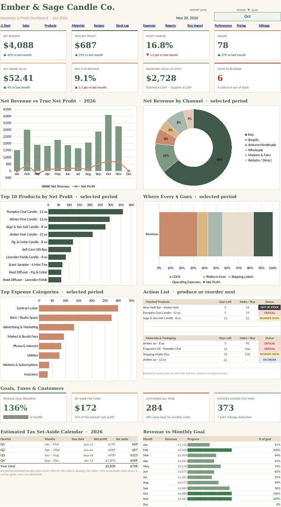

Cream = type here Green = pick from list ▼ White = automatic (locked)
Sheets are protected without a password, so formulas can't be overwritten by accident. To customise: Review › Unprotect Sheet.

| Tab | Use it to… |
|---|---|
| Dashboard | See revenue, true profit, fees, goal progress, tax set-aside and what to reorder. Pick a month or Full Year top-right. |
| Sales / Etsy Import | Record orders (one row per item). Paste Etsy's order file instead of typing. |
| Products · Performance | Stock, unit cost, stockout date, batch size · which products earn the most (★ STAR / KEEP / REVIEW). |
| Pricing Calculator | Price a new idea: break-even, suggested retail (.99), wholesale, free-shipping and Offsite Ads scenarios. |
| Materials · Recipes · Stock Log · Suppliers | Supplies, what each product uses, every stock movement, who you buy from. |
| Expenses · Mileage · Reports | Business costs, business driving, monthly P&L and the year-end tax summary for your accountant. |
Shipping-label costs aren't in Etsy's order file. Type them in Sales (Shipping Label Cost) if you buy labels on Etsy; you'll find them in Etsy's monthly statement. If Etsy ever renames a column, type the new name in the mapping table at the top of Etsy Import.
| You are… | Do this |
|---|---|
| Handmade maker | Materials + Recipes; log batches on Stock Log as Production. |
| Made to order / custom | Start Here › Deduct Materials When = Sold. No batches needed. |
| Reseller / vintage | Products › Bought-in Cost / Unit; log restocks as Product Purchase. Recipes optional. |
| Print-on-demand | Bought-in Cost = provider's price per item; Track Stock = No. |
| Digital / services | Track Stock = No; cost 0 or your time via Labor Min / Unit. |
| Multi-channel | Up to 8 channels with their own fees (Etsy, Shopify, Amazon Handmade, markets, wholesale…). |
| When | What |
|---|---|
| Every few days | Import or type new orders; log batches and supply deliveries. |
| Weekly | Dashboard › Action List: make or reorder what's flagged. |
| Monthly | Add expenses and trips; check goal progress and Performance. |
| Quarterly | Move the Tax Set-Aside amount to savings before each due date. |
| Year end | Count stock (value into Reports E82), send Reports to your accountant, Save As a new file, change the Fiscal Year. |
| If you see… | Do this |
|---|---|
| ###### in a cell | The column is too narrow: drag the column edge wider. Nothing is broken. |
| "The cell is protected" | That's a white formula cell. Type in the cream / green cells instead, or Review › Unprotect Sheet to customise. |
| Dropdown rejects my value | Add it to the matching list on Start Here (right side) or to Suppliers / Products / Materials first. |
| "⚠ Unknown SKU" | The SKU isn't on Products yet (or is spelled differently). Add it or fix the spelling. |
| Stock looks wrong | Check Opening Stock on Products / Materials, and that batches are logged on Stock Log as Production (or Product Purchase). |
| Numbers pasted as text | Use Paste Special › Values. Dates should be real dates (e.g. 3/15/2026), not text. |
| I need more rows | Sales holds 1,500 lines, Stock Log / Expenses / Mileage 1,000 each. Unprotect, copy the last row down, re-protect. Or start a new file each year. |
| New tax year | File › Save As (e.g. "My Shop 2027"), clear Sales / Stock Log / Expenses / Mileage (ranges listed on Start Here ⑤), update Fiscal Year and enter this year's opening stock. |
| Fees changed | Update the rate once on Start Here › Channel Fees. Every past and future order recalculates. |
| Currency symbol missing (Google Sheets) | Normal: Sheets can't switch number formats by formula. Headers and KPI cards still show your symbol; all math is identical. |